Project 4B · CS180, Fall 2026 · Tan Ee Khai
The hand-clicked correspondences from Part A are replaced with automatic corner detection, feature matching and RANSAC. The three Part A scenes are stitched automatically and compared with the hand-clicked mosaics, and the same pipeline is used to stitch photos from Yosemite. For the bells and whistles, rotation-invariant descriptors were added.
Everything is written with NumPy, except the Harris corner response, which follows the course's harris.py and uses scikit-image. As in Part A, every photo is downscaled so that its long side is 1000 pixels, and all corners, matches and results below are on these downscaled images. The homography solver, the bilinear warp and the two-level blend are the ones from Part A.
In Part A every correspondence was clicked by hand. In Part B the computer finds them, following "Multi-Image Matching using Multi-Scale Oriented Patches" by Brown, Szeliski and Winder, with the simplifications from the project page. The pipeline has four steps:
Besides the three Part A scenes, a new set of three photos from Yosemite was stitched. They were too hard to hand-label because of the number of lines and features in the mountains, which make it hard to tell points apart manually. Every crack, ridge and pine tree looks like many others, so the automatic pipeline is the only practical way to stitch them.
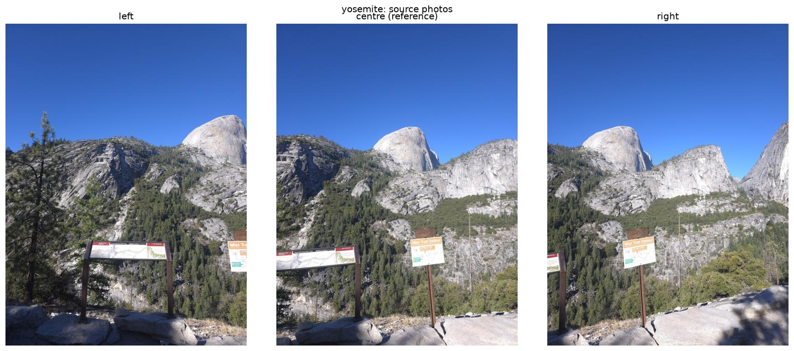
The Harris corner response of the grayscale photo is computed following the course's harris.py, which uses corner_harris and peak_local_max from scikit-image. Corners within 20 pixels of the border are dropped, because the descriptor needs a 40 × 40 window around each one. Even the plain blue sky has tiny local maxima of the Harris response caused by noise and JPEG compression, thousands of times weaker than a real corner. They would match nothing, and because they are isolated, ANMS would pick them. Every corner whose response is below 0.1 % of the strongest one in the photo is therefore dropped. In the Yosemite centre photo the strongest sky corner is at about 0.03 %, so this removes the whole sky and still leaves 12,461 corners.
Keeping only the strongest corners would crowd them into the highest-contrast regions. ANMS gives each corner a suppression radius ri, the distance to the nearest corner that is clearly stronger, meaning that the other corner's response times crobust = 0.9 still exceeds corner i's. The 500 corners with the largest radii are then kept. A corner in a busy region has a stronger neighbour close by, so its radius is small. The best corner in a quiet region has a large radius, so the chosen corners cover the whole photo. Comparing all pairs of 12,000 corners at once would need a very large distance matrix, so the radii are computed in blocks of 1,000 corners, which takes about 3 to 4 seconds per photo.
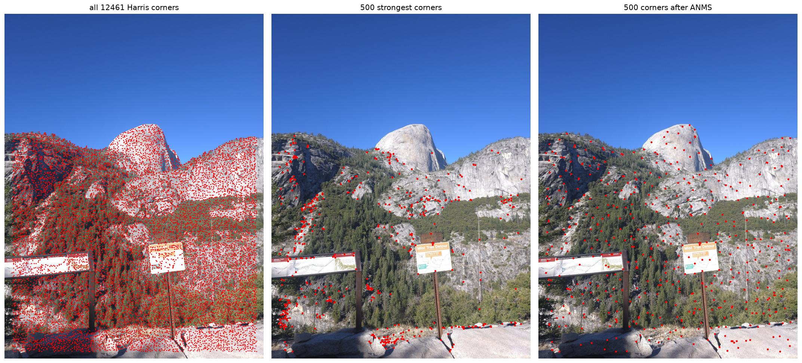
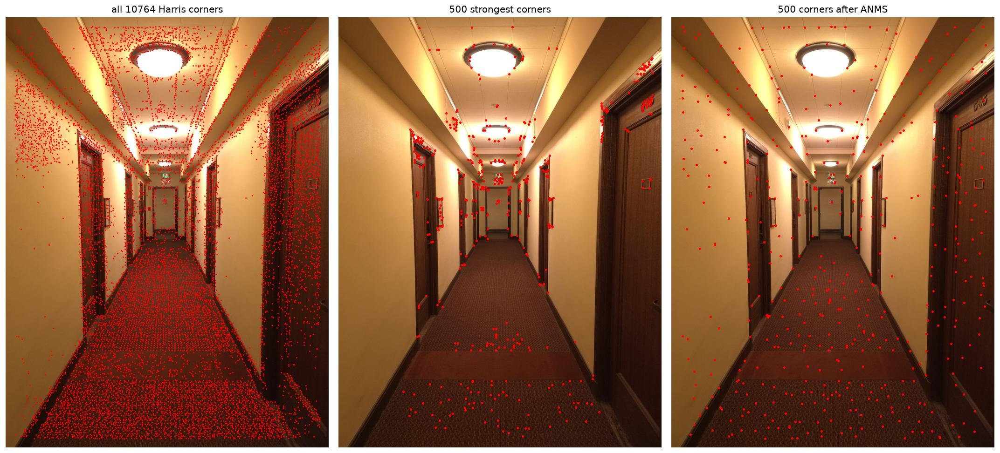
For each ANMS corner, the 40 × 40 window centred on it is taken and every fifth pixel is kept, which gives an 8 × 8 patch. Keeping every fifth pixel of the raw photo would alias, so the photo is first blurred with a Gaussian of σ = 2, which removes detail finer than the new sample spacing. The result is a large, blurry descriptor that still matches when a corner shifts by a pixel or two between photos. Each patch is then bias/gain normalised by subtracting its mean and dividing by its standard deviation, which removes the brightness and contrast changes caused by the phone re-exposing every shot. The descriptor is the 64 values of the normalised patch.
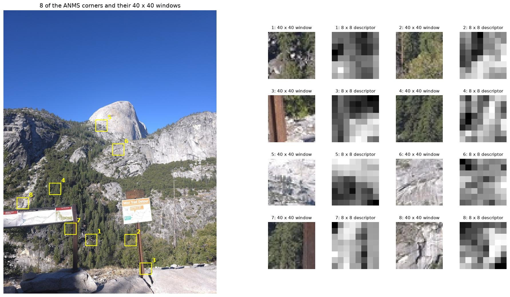
For every descriptor in one photo, the squared distance to all 500 descriptors in the other photo is computed. The nearest one (1-NN) is the candidate match, but in a photo full of similar texture, such as rows of windows or a forest of pine trees, the nearest neighbour is often just one of many look-alikes. Lowe's ratio test compares the 1-NN distance with the 2-NN distance. A true match is much closer than anything else, so the ratio 1-NN / 2-NN is small. An ambiguous corner has two nearly equal candidates, so its ratio is close to 1. A match is kept when the ratio of distances is below 0.6. On squared distances, the quantity in Figure 6b of the paper, this is a threshold of 0.36, where the paper's distribution of correct matches is still high and that of incorrect matches is low.
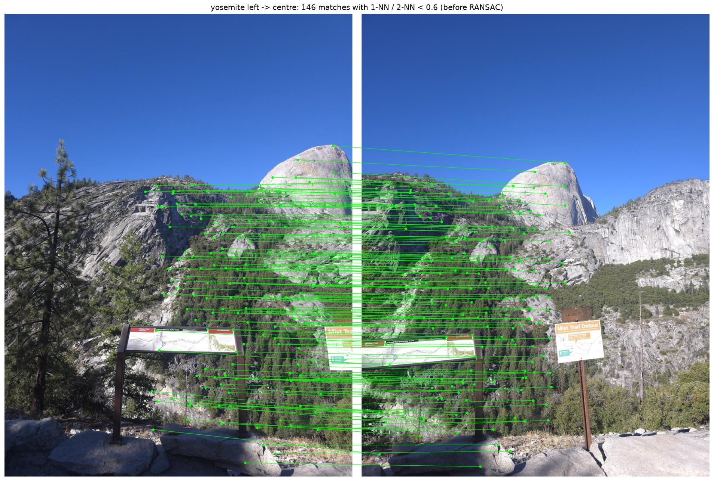
To check the threshold on my own photos, the final RANSAC homography from B.4 was used to label every corner's nearest neighbour as correct, if the homography sends the corner within 3 pixels of it, or incorrect otherwise. Incorrect nearest neighbours almost all have a ratio above 0.8, while correct ones are spread from 0.1 to 0.8. Below 0.6 there are 140 correct matches and only 6 incorrect ones. A threshold of about 0.7 would add some correct matches, but 0.6 keeps the matches very clean and still leaves plenty for RANSAC.
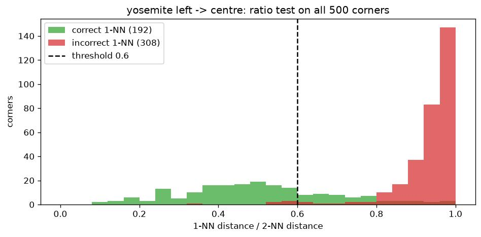
A few matches that pass the ratio test are still wrong, for example two different cracks that look alike, and a least-squares fit is pulled far off by even one of them. 4-point RANSAC was implemented from scratch:
computeH from Part A.A wrong match almost never agrees with a homography fitted to correct matches, so the largest inlier set is made of correct matches. Even if only 20 % of the matches were correct, the chance that 3,000 samples never draw 4 correct ones would be (1 − 0.24)3000 ≈ 0.8 %, and every scene here has a much higher inlier rate than that. The mosaics then use the Part A canvas and two-level blend unchanged, with the centre photo as the reference.
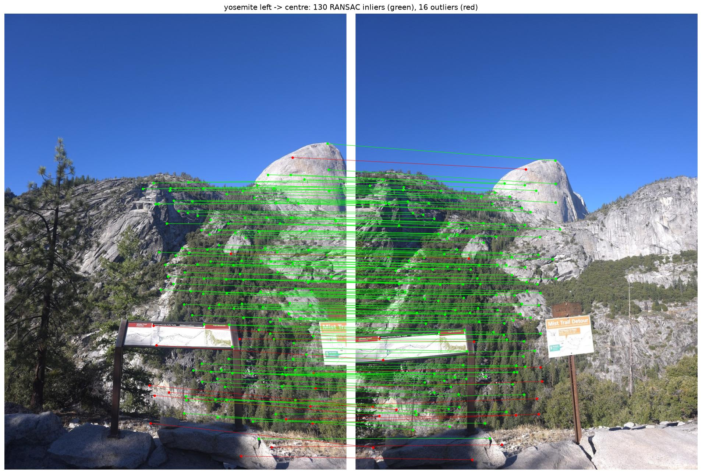
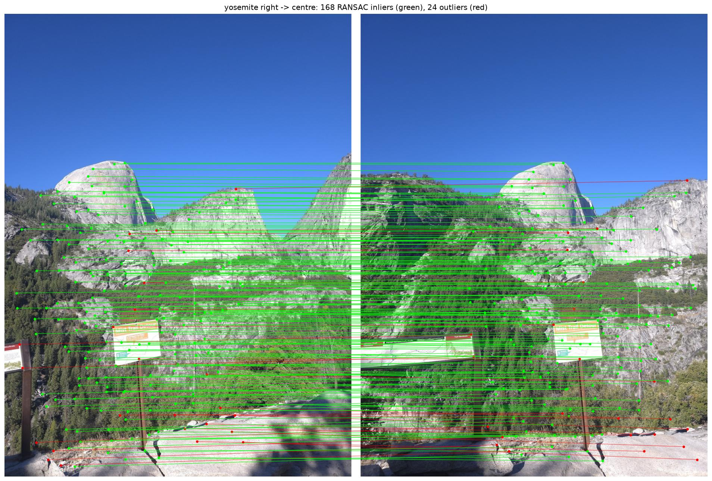
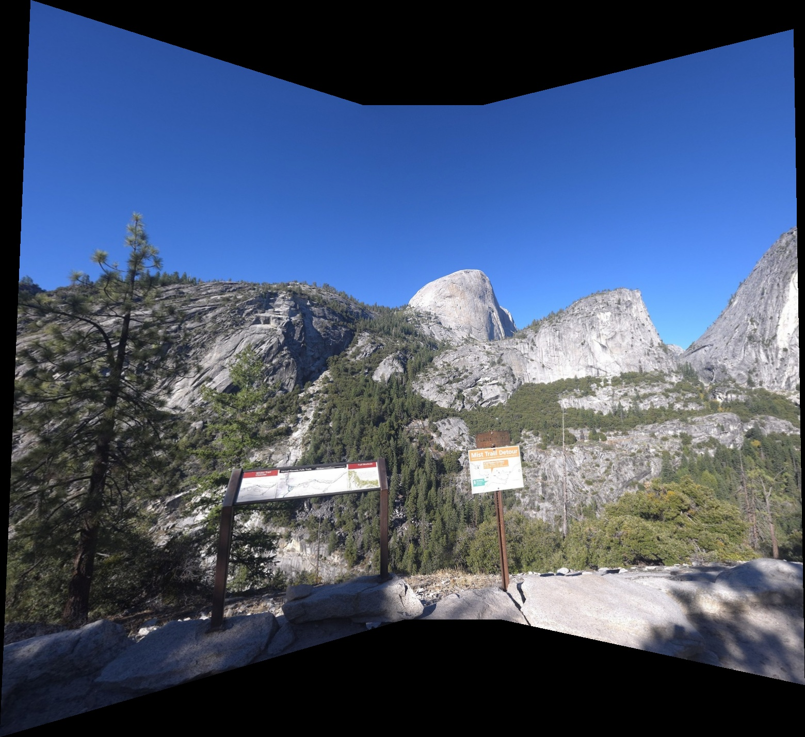
For the three Part A scenes, the automatic homography can be checked against the hand-clicked points. The clicked points are sent through the automatic homography, and the distance from where their partners were clicked is measured. My clicks are only accurate to a pixel or two, so a value close to the manual fit's own error means that the two homographies agree.
| Scene | Photo pair | Matches | Inliers | My clicks, auto H | My clicks, manual H |
|---|---|---|---|---|---|
| Yosemite | left → centre | 146 | 130 | – | – |
| right → centre | 192 | 168 | – | – | |
| Hallway | left → centre | 55 | 19 | 2.23 px | 1.36 px |
| right → centre | 62 | 18 | 3.08 px | 0.53 px | |
| Path | left → centre | 68 | 60 | 1.28 px | 0.59 px |
| right → centre | 60 | 42 | 1.32 px | 0.40 px | |
| Courtyard (B.5) | left → centre | 41 | 23 | 2.44 px | 1.45 px |
| right → centre | 24 | 14 | 2.40 px | 1.17 px |
The manual error is always lower, because the manual homography is fitted to exactly those clicks. The automatic homographies come within one to three pixels of them, using more points, none of which had to be clicked. The hallway has the fewest inliers, because its plain walls and carpet have little texture and its repeated door frames are ambiguous.
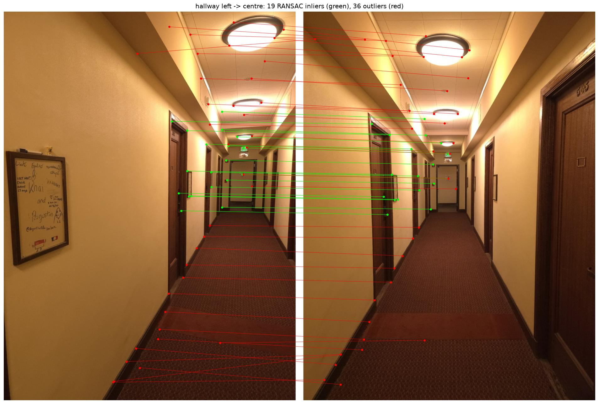
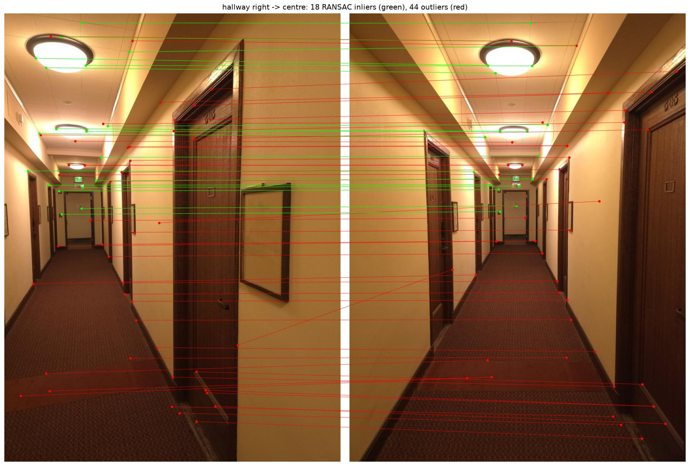
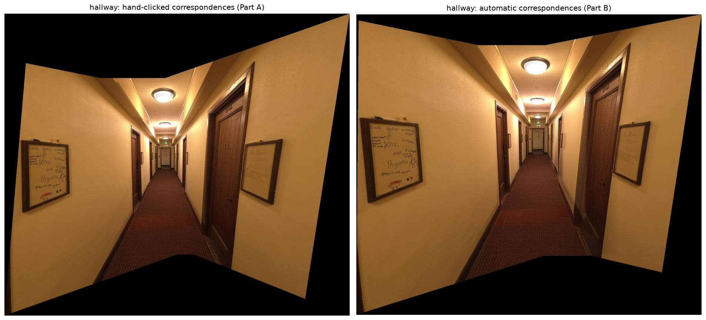
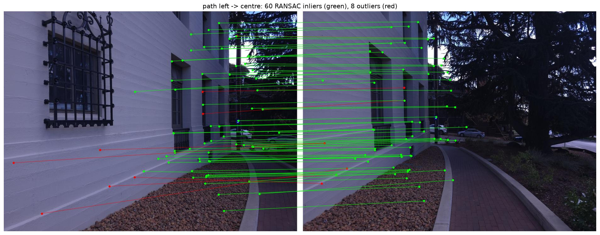
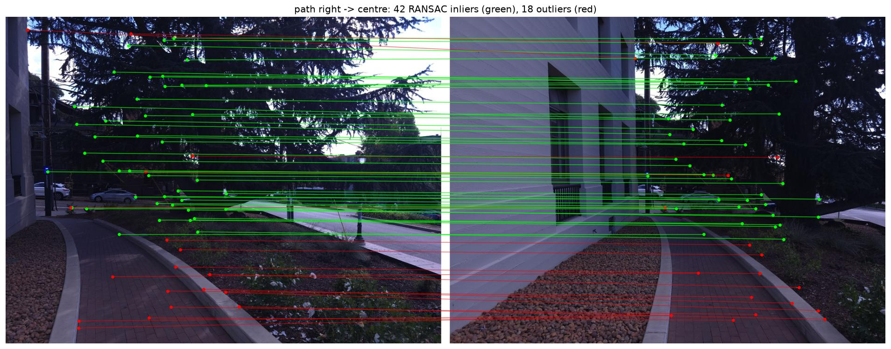
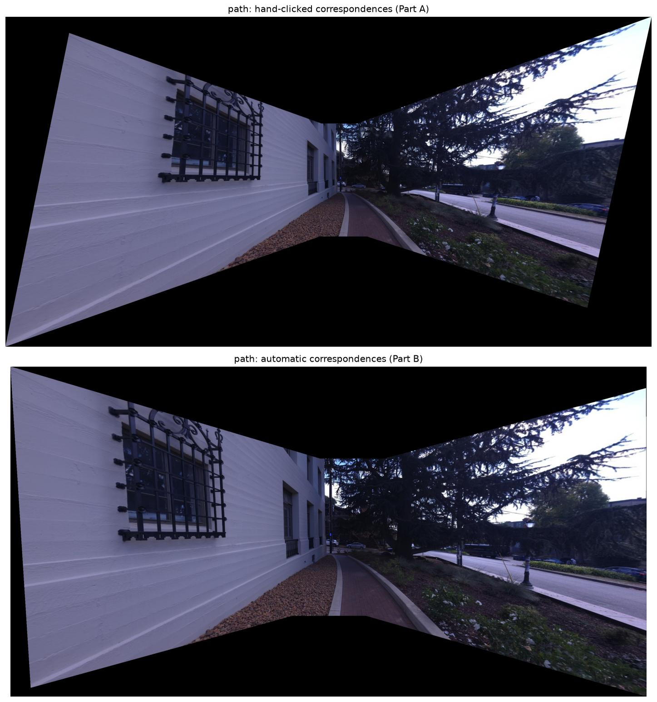
The courtyard photos were taken looking upward while turning, so the side photos are rotated by about 23 degrees relative to the centre photo. An axis-aligned patch of a rotated corner looks different from the same corner upright, so most true matches fail the ratio test. Only 14 and 12 matches pass, RANSAC finds just 7 and 8 inliers among them, and my clicks land 5 to 6 pixels from where those homographies send them. The courtyard mosaic was therefore built with the rotation-invariant descriptors from B.5.
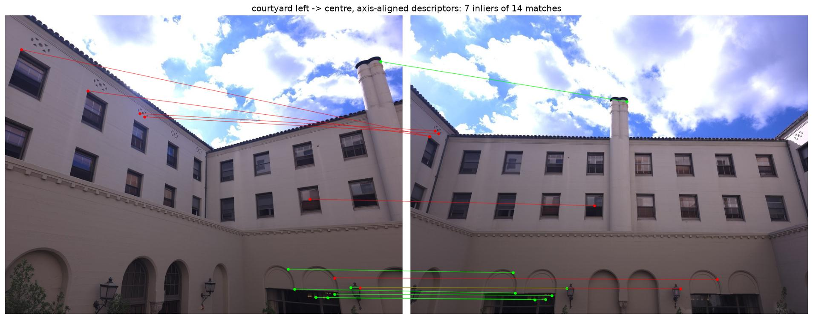
Following Section 4 of the paper, every corner is given an orientation, and its descriptor is sampled in a window rotated to match it:
If the photo rotates, the gradient direction rotates with it, so the sampling grid turns by the same angle and the descriptor stays the same. To test this, the Yosemite centre photo was rotated by 30 degrees with the Part A bilinear warp and matched against the original. With axis-aligned descriptors not a single match passes the ratio test. With oriented descriptors 208 matches pass, and 206 of them are correct.
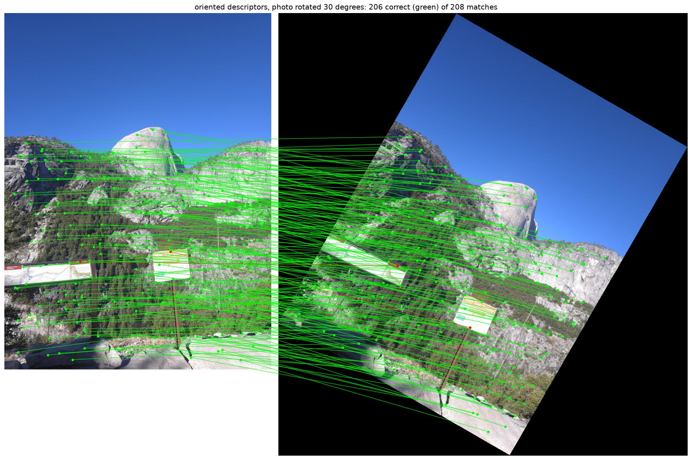
With oriented descriptors the courtyard matches: RANSAC finds 23 and 14 inliers, and my clicks land within about 2.4 pixels of where the automatic homographies send them.
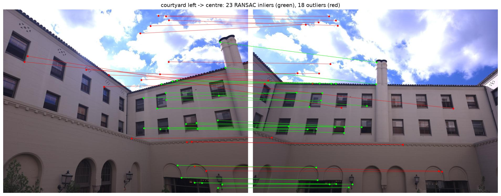
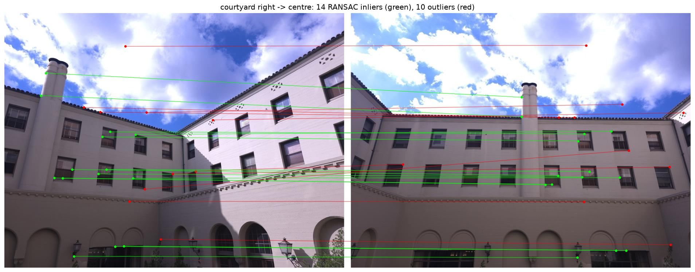
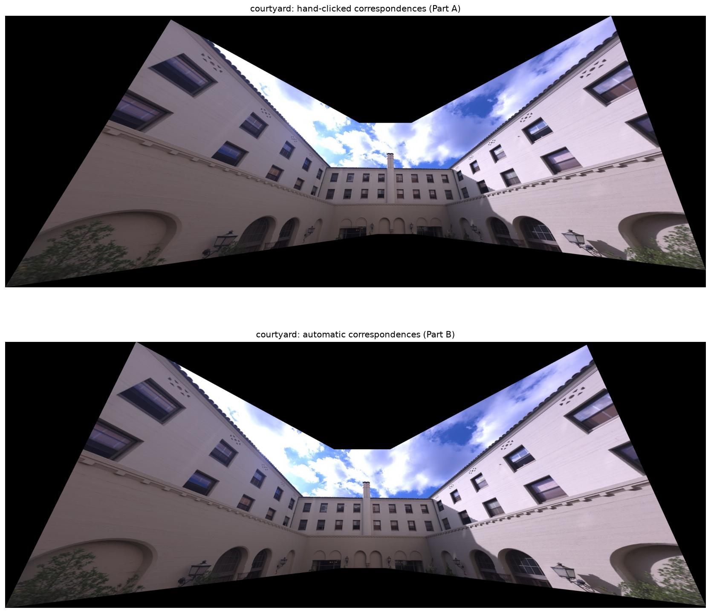
Part B is in proj4b_autostitch.ipynb, submitted with the project, which reuses the Part A homography, warping and blending functions from proj4a_rectify.ipynb. Its main functions are get_harris_corners, anms, describe_axis, match_features and ransac_homography, and for B.5 orientations and describe_oriented.